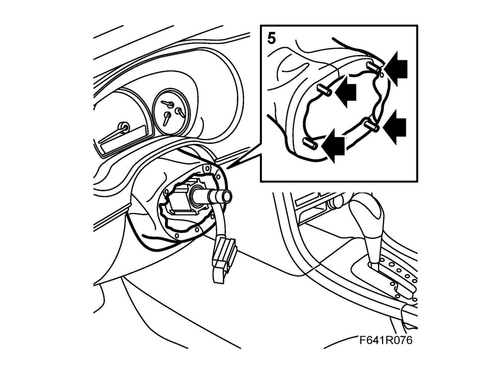
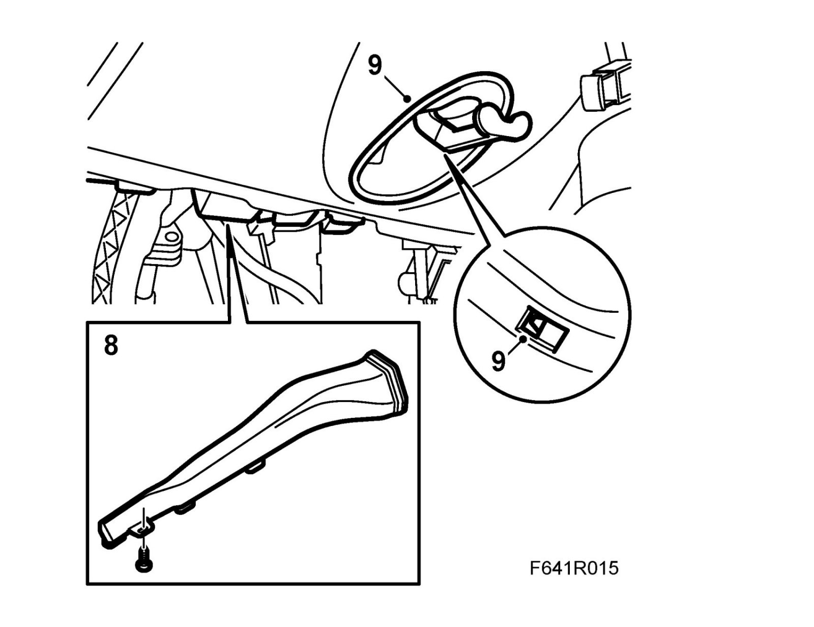
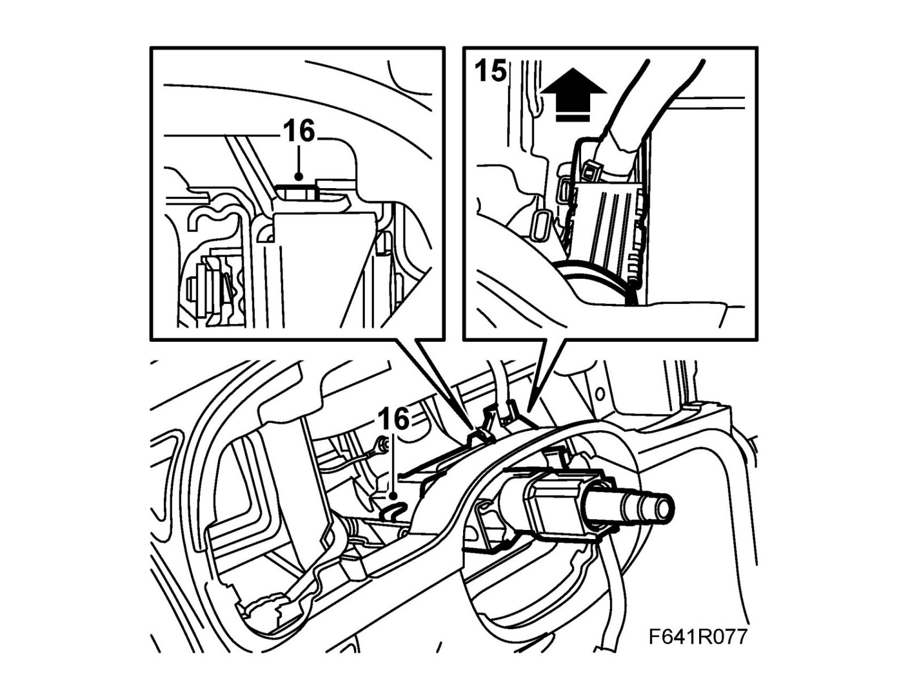
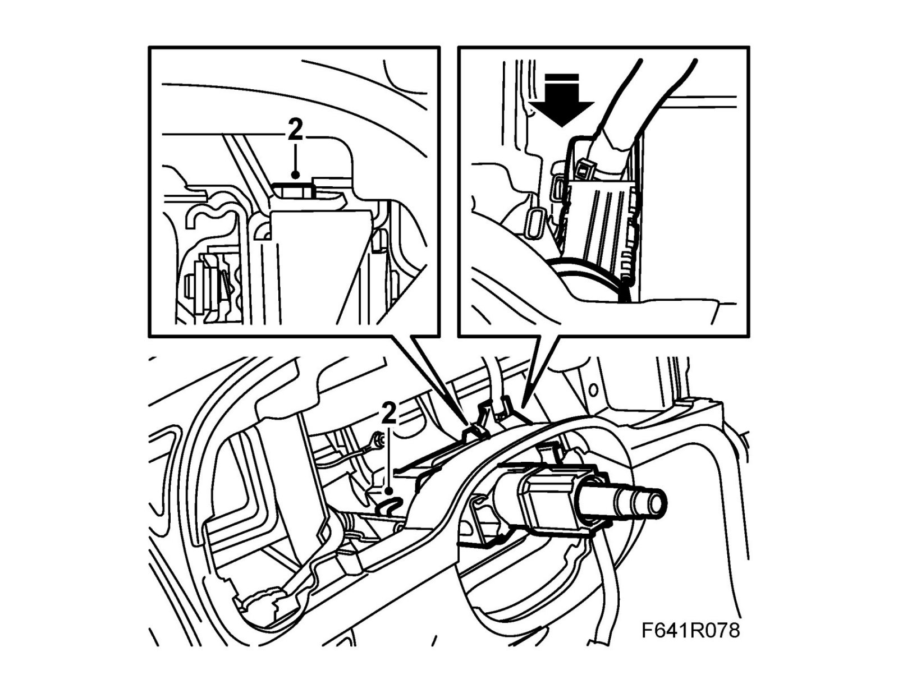
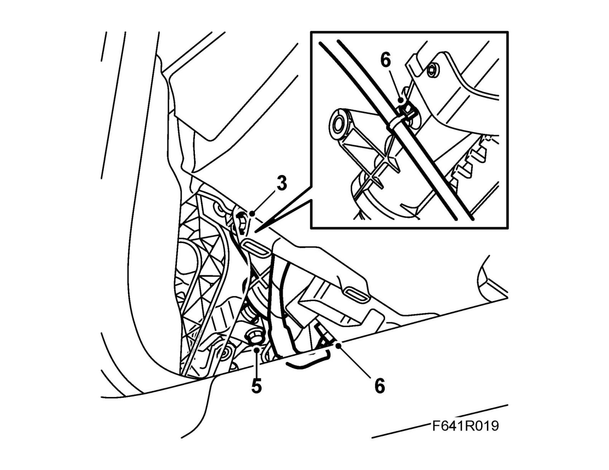
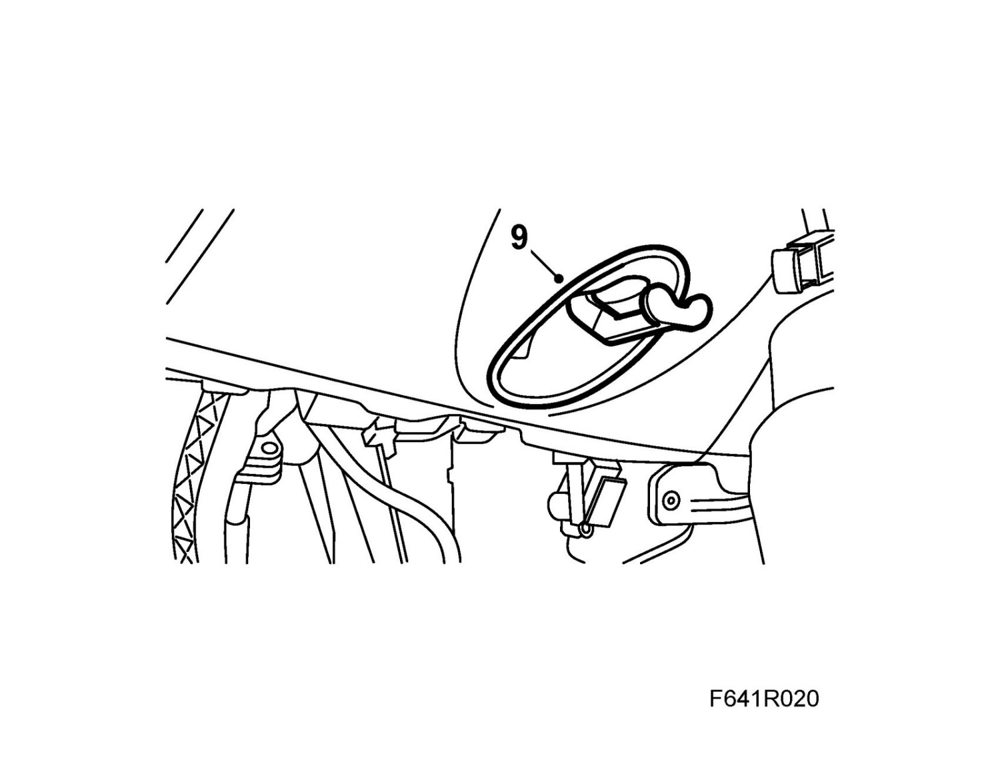
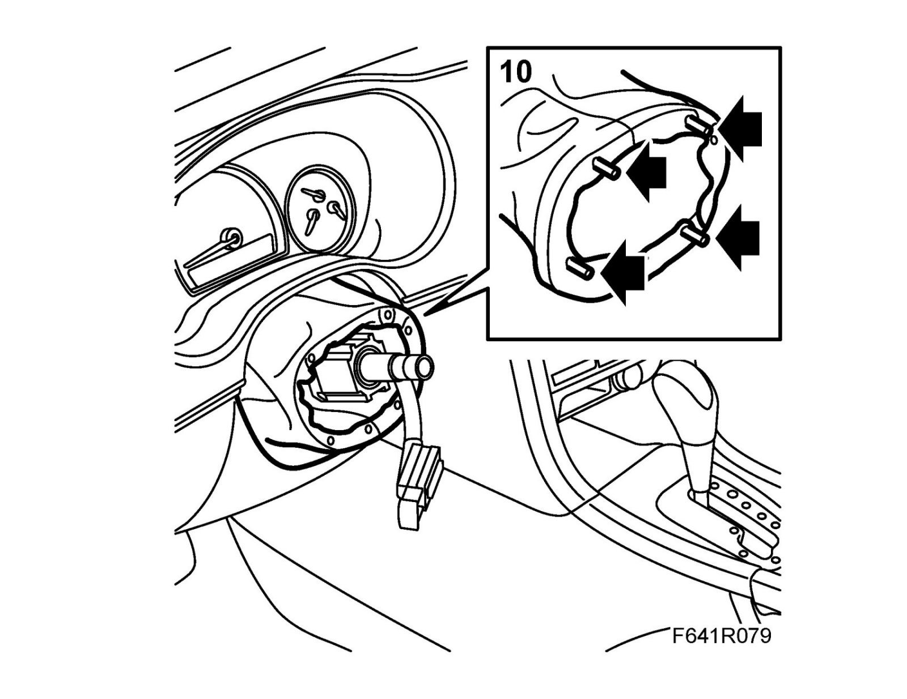
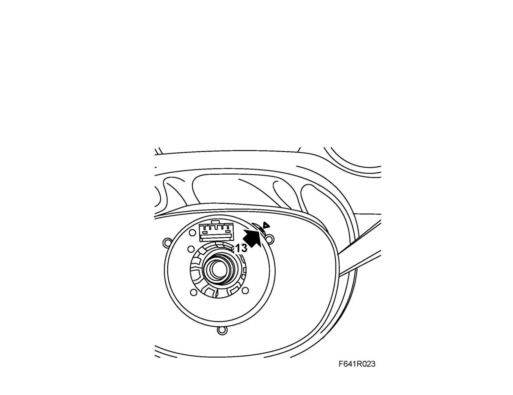
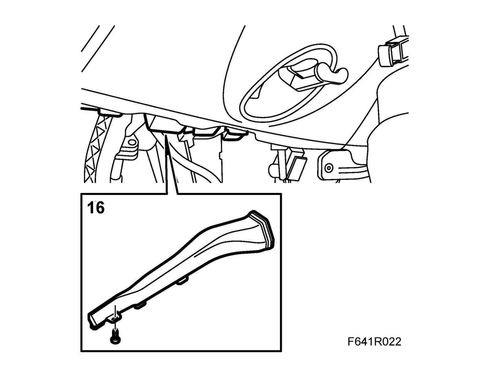

Steering Column: Service and Repair
Steering column assemblyTo remove
Note
The steering column lock must be unlocked for removal.
The key must be in the ignition switch in the LOCK position.
1. Set the driver's seat in its rearmost and highest position.
2. Detach the negative cable from the battery.
Note
The steering column lock must be unlocked for this procedure.
3. Remove the Steering wheel.
4. Remove the Column Integration Module.
5. Remove the gaiter from the instrument panel.

6. Remove the Main Instrument Unit.
7. Remove the sound insulating baffle on the driver's side.
8. Remove the floor air duct.

9. Remove the cover and the handle for steering wheel adjustment.
Note
Press the lock tongue carefully so does not break off.
10. Fit the steering wheel loosely on the steering shaft and turn so that the steering shaft joint is accessible.
11. Remove the steering shaft joint from the steering shaft.
12. Unplug the connector of the steering column lock unit.
13. Remove the metal clip with the cable tie and wiring harness from the steering column assembly.
14. Remove the lower bolt of the steering column assembly.
Manual gearbox: Depress the clutch pedal to access the bolt.
15. Detach and move aside the cable duct from the steering column assembly.

16. Remove the upper bolts of the steering column assembly.
17. Lock the steering column assembly in its compressed position.
18. Unhook the steering column assembly from the steering wheel member.
Manual gearbox: Depress the clutch pedal
Align the steering column assembly past the pedal. When replacing the steering column assembly, transfer the old SCL unit to the new steering column assembly. See Steering wheel lock unit, SCL.
To fit
1. Manual gearbox: Depress the clutch pedal
Slip the steering column assembly past the pedal. Hook the upper part of the steering column assembly into the steering wheel member.
2. Fit the upper bolts and tighten by hand.

3. Fit the lower bolt.
Manual gearbox: Depress the clutch pedal to access the bolt.
Tightening torque 24 Nm (18 lbf ft)

4. Tighten the upper bolts.
Tightening torque 24 Nm (18 lbf ft)
5. Fit the steering shaft joint to the steering shaft. Clean the threads and apply 74 96 268 Threadlock to the threads.
Warning
Make sure the screws fits into the groove in the steering shaft.
Tightening torque 30 Nm (22 lbf ft)
6. Plug in the connector of the steering column lock unit. Fit the metal clip with cable tie and the wiring harness of the steering column assembly.
7. Fit the cable duct to the steering column assembly.
8. Fit the Main Instrument Unit; do not connect the negative battery cable.
9. Fit the cover and the handle for steering wheel adjustment.

10. Fit the gaiter to the instrument panel.

11. Fit the Column Integration Module.
12. Fit the steering wheel loosely on the steering shaft. Position the steering wheel and the wheels so that they face straight ahead.
Lift off the steering wheel.
13. Set the center position of the contact roller as follows. The connector straight up and the indicator centered at the marking.

14. Fit the Steering wheel.
15. Fit Airbag, driver (333D).
16. Fit the floor air duct.

17. Fit the sound insulating baffle on the driver's side.
18. Attach the negative battery cable.
19. Check the operation of the steering column lock. Its immobilizer function will only work after a test drive.
20. Calibrate the steering wheel angle sensor.